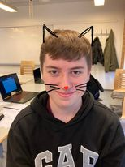

Om mig
Hej mit navn er Nicki, jeg er en ung frisk dreng. Jeg elsker at tage på arbejde. Da jeg elsker at lave noget og tjene penge. Jeg går også på Gymnaiset, på slotshavens gym. her tager jeg en linje som hedder pro/kom. Dette elsker jeg da jeg godt kan lide ting med pc'er.